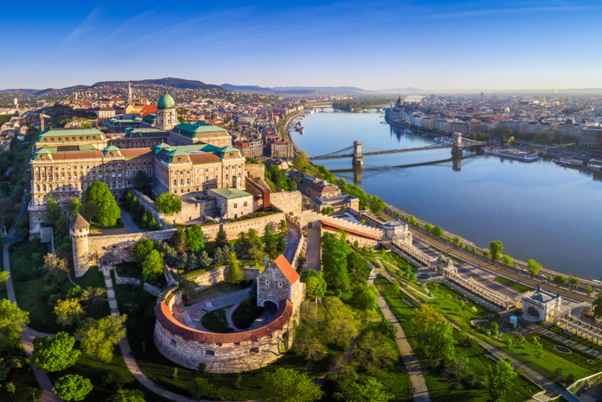

- Traditional Regions
The Great Alfold is the largest region of the country. It is divided into two parts: Kiskunság, the area lying between the Danube and Tisza rivers, and Transtisza (Tiszántúl), the region east of the Tisza. Kiskunság consists primarily of a mosaic of small landscape elements—sand dunes, loess plains, and floodplains. Kecskemét is the market centre for the region, which is also noted for its isolated farmsteads, known as tanyák. Several interesting groups live there, including the people of Kalocsa and the Matyó, who occupy the northern part of the plain around Mezőkövesd and are noted for folk arts that include handmade embroidery and the making of multicoloured apparel.

In the generally homogeneous flat plain of the Transtisza region, only the Nyírség area in the northeast presents any form of topographical contrast. Closely connected with the Nyírség are the Hajdúság and the Hortobágy regions, and all three areas look to Debrecen, the largest city of the plain. The steppe life of earlier times survives in the Hortobágy, where the original Hungarian cattle, horse, and sheep breeds have been preserved as part of the national heritage. The national park there was designated a UNESCO World Heritage site in 1999. The Little Alfold, the second major natural region, is situated in the northwest and is traversed by the Danube and Rába rivers and their tributaries. It is more favourably endowed with natural resources than is the Great Alfold; both agriculture and industry are more advanced there. Győr, known for its Baroque architecture, is the region’s major city.
The third major region, Transdanubia, embraces all of the country west of the Danube exclusive of the Little Alfold. It is a rolling upland broken by the Bakony and Mecsek ridges. Lake Balaton is a leading resort area. To the south of the lake are the hills of Somogy, Tolna, and Baranya megyék (counties), where Pécs is the economic and cultural centre. Also found in Transdanubia are the Bakony Mountains, whose isolation, densely forested ridges, small closed basins, and medieval fortresses and monasteries have protected the local inhabitants over the course of many stormy centuries. The cultural centre of Transdanubia is the historic city of Veszprém. In the southern part of the region, north and west of Lake Balaton, are health resorts and centres of wine production, notably Keszthely, Hévíz, Badacsony, and Balatonfüred.
The Northern Mountains, the fourth major geographic region of the country, contains two important industrial areas, the Nógrád and Borsod basins. Agriculture is also important, especially viticulture; notable are the Tokaj (Tokay) and Eger vineyards. Indeed, the region that produces Tokay wines was designated a UNESCO World Heritage site in 2002. Tourism in the Northern Mountains is well-developed, and numerous spas and recreation centres are located there. Miskolc is the main economic centre for the region.
- Urban Settlement
About seven-tenths of the population is urban, but, outside of the major cities, the bulk of towns in Hungary have populations of less than 40,000. Until the late 20th century, these were functionally vastly overgrown villages rather than towns. About one-third of the urban population lives within the Budapest metropolitan area.
Urban Hungary is dominated by Budapest, which is several times the size of any of the other major cities. It has the largest industrial workforce in the country. The major provincial centres are Debrecen, Miskolc, Szeged, Pécs, and Győr, each of which has an economic, cultural, and administrative hinterland that reaches deep into the surrounding countryside along with an expanding industrial capacity. Below the provincial centres in the hierarchy are the traditional market towns, such as Kecskemét, Székesfehérvár, Nyíregyháza, Szombathely, and Szolnok, often with new suburbs extending from their medieval or Baroque town centres. Also worthy of note are the predominantly industrial towns located close to the mineral resources of the Northern Mountains, which, from small beginnings in the late 19th century, have developed into major industrial centres. They include Tatabánya, Salgótarján, and Ózd. In addition, a number of industrial towns were created in the late 20th century on greenfield sites as part of deliberate planning policy. These include the metallurgical centre of Dunaújváros on the Danube and the chemical centre of Kazincbarcika in northeastern Hungary.
- Rural Settlement
The distribution of rural population varies widely from one part of the country to another. For historical reasons connected with resettlement following the Turkish occupation in the 16th century, the villages of the Great Alfold are small in number but large in size. By comparison, rural settlement in Transdanubia and in the Northern Mountains takes the form of many small nucleated and linear villages. The tanyák tend to be concentrated in the Great Alfold. The village of Hollókő, now preserved as a UNESCO World Heritage site, exemplifies the rural settlement typical of Hungary prior to the agricultural changes of the 20th century.


HUNGARY FLAG

|
| NATIONAL ANTHEM OF HUNGARY |
| OFFICIAL NAME Magyarország (Hungary) |
| FORM OF GOVERNMENT unitary multiparty republic with one legislative house (National Assembly [199]) |
| HEAD OF STATE President: János Áder |
| HEAD OF GOVERNMENT Prime Minister: Viktor Orbán |
| CAPITAL Budapest |
| OFFICIAL LANGUAGE Hungarian |
| MONETARY UNIT forint (Ft) |
| TOTAL AREA (SQ MI) 35,917 |
| DENSITY: PERSONS PER SQ MI (2019) 270.8 |
| URBAN-RURAL POPULATION Urban: (2018) 71.4% Rural: (2018) 28.6% |
| LIFE EXPECTANCY AT BIRTH Male: (2017) 72.4 years Female: (2017) 79 years |
| GNI PER CAPITA (U.S.$) (2017) 12,870 |
|  Insider's Travel Guide |
 |
 |
 |
 |
 |